Workflow Management¶
- Overview
- System vs Custom Workflow
- Workflow Steps, Transitions, and Attributes
- Create a Workflow
- UI Limitations for Workflow Creation
- Workflow Visualization
- Multiple Active Workflows
- Workflow Management
- User Permissions for Individual Workflows
- Workflow Translations
- Detailed Information About System Workflows
Overview¶
In OroCommerce, a workflow is a business process that involves multiple user interactions or sequential phases. It may trigger other workflows and change the status of the items involved in a business process.
In OroCommerce Front Store, workflows organize and direct users’ work (e.g. during the checkout), making them follow particular steps in a pre-defined order (e.g. provide shipping address, then select shipping method from the options supported for the destination), or preventing them from performing actions that either contradict or conflict with the logical steps of a process (e.g. a customer may not be able to submit an order without their manager’s approval).
In OroCommerce Management Console, workflow help users follow standard procedures that may be of a non-linear nature with alternating flow that depends on the available information, related items status, connectivity with integrated solutions, etc.
System vs Custom Workflow¶
In Oro applications, any workflow may be classified as either system or custom. System workflow modification is limited in order to keep core functionality operational. However, if you create a Custom workflow from scratch or clone the existing system workflow, you can tailor it for your needs without any restrictions.
The following system workflows are provided out of the box in OroCommerce:
Workflow Steps, Transitions, and Attributes¶
Each process or action applied to a record is called a Workflow Transition. On the interface, transitions take a form of a button. There are two types of transitions:
- Transitions that take a user from one state to another and connect to each step in the workflow.
- Self-transitions that do not change steps in the workflow.
Workflow Step is the state of a record before and after a transition.
Every workflow has a Start transition that launches the workflow.
A transition can be defined as soon as there is at least one step besides Start. However, it is often simpler to define all workflow steps and then all the transitions between them.
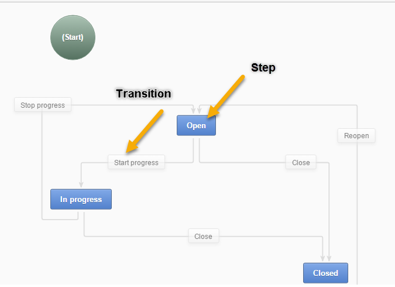Attributes are characteristics of the record. For example, a ZIP code and a street name are attributes of an address. In the course of each transition, you can change some attributes of the processed record.
If enabled (see the section below), the Workflow Widget displays the process steps defined in workflow configuration on the record view page. Multiple workflow widgets can be displayed for one record at the same time.
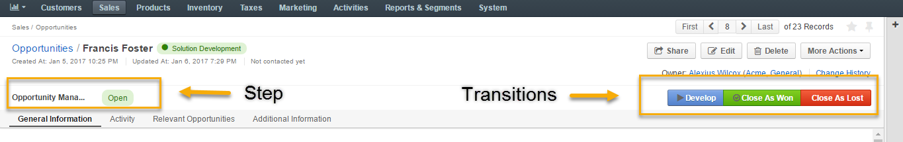Create a Workflow¶
To create a workflow for an entity:
Navigate to System > Workflows.
Click Create Workflow in the top right corner.
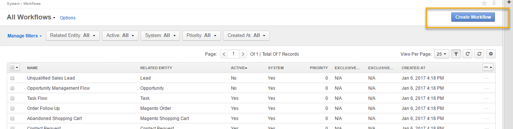On the Create Workflow page, specify the details of your workflow in the General section.
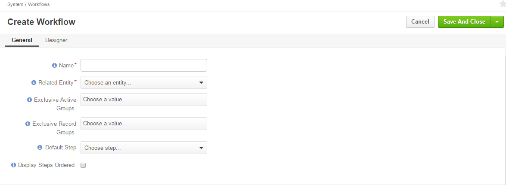
| Field | Description |
|---|---|
| Name | The name of the workflow. |
| Related Entity | A related entity is the entity for which the workflow is created. When the workflow is active, it can be launched and executed on the records of its related entity. |
| Default Step | Specifying the default steps launches the workflow in a particular step by default. For instance, when you activate Opportunity Management Flow, a newly created opportunity will appear as open, if Open was specified as the default step. If no step is selected, all newly created records will have no workflow associated with them, and it must be launched with one of the starting transitions. |
| Display Steps Ordered | Display Steps Ordered box is disabled by default. If checked, all workflow steps are displayed in the workflow widget. If not checked, only the steps that have actually been performed are displayed. |
| Exclusive Active Groups | Exclusive Active Groups is a list of group names for which the current workflow should be active exclusively. Determining Exclusive Record Groups allows to set up mutually exclusive workflows in order to configure how they each correlate in the system. This makes it possible for only one workflow to be active, or for an entity record to use only one workflow from the group at a time. |
| Exclusive Record Groups | Exclusive Record Groups specify how workflows apply to certain sets of records in order to limit their applicability. This lets users create specific workflows for specific segments (subsets) of records. For example, no concurrent transitions are possible among workflows in same exclusive record group. |
- Once the details in the General section have been specified, add steps and transitions in the Designer section to model your business process. For detailed guidance on Using Workflow Designer below.
- When done, click Save.
Using Workflow Designer¶
The Designer section consists of a table and an interactive chart representations of a workflow, as illustrated below:
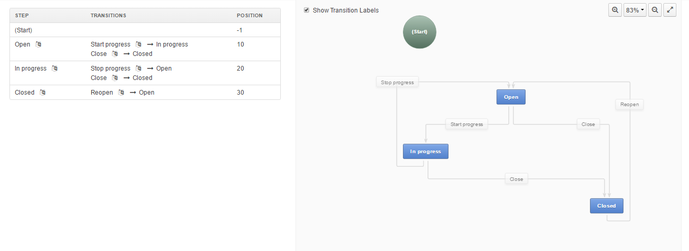
Within the table, you can perform the following actions for a transition:
- Update (clicking on the transition name opens an Edit Transition form).
- Clone (clicking opens a Clone Transition form).
- Delete (launches a Delete Confirmation popup).
For a step, you can:
- Add a transition to a step (clicking + opens an Add New Transition form)
- Update (clicking opens an Edit Step form).
- Clone (clicking opens a Clone Step form).
- Delete (launches a Delete Confirmation popup).

Within the chart, you can:
- Add transition (opens an Add Transition form).
- Add step (opens an Add Step form).
- Rearrange the chart for clearer workflow view.
- Autosort (automatically shapes your chart).
- Zoom in/out (zooms the chart in/out).
- Show Transition Labels (checking the box displays transition labels in the chart).
- Drag transitions from one step to another (drag an arrow from one of four corners of the step box).

- Undo/Redo changes (reverts or restores changes made to the chart).
- Edit/Clone/Delete a step/transition by clicking on the arrow on the step/transition button.
Note
All actions available for transitions and steps in the table are available in the chart as well.
As an example, we are going to create an Opportunity Support Flow to show how a workflow is configured and visualized.
Add a Step¶
To add a step to a workflow, click Add Step in the top right corner of the chart.
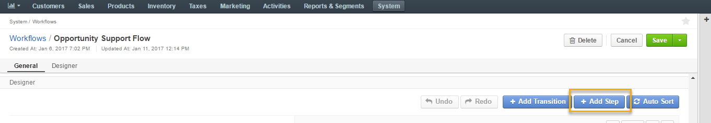In the Add Step form, complete the following fields:
| Field | Description |
|---|---|
| Name | The name of the step that will be displayed on the entity record. |
| Position | A number that determines the position of the step in the workflow. The higher the number, the further the step is from the start. |
| Final | This option marks the step as the logical end or the outcome of the workflow. This is a purely logical property required for distinguishing steps for the funnel charts or creating reports with the workflow data. Marking the step final has no effect on the flow itself. |
For the sample Opportunity Support flow, we will start off by creating two steps: No Complaints and Complaint Received.
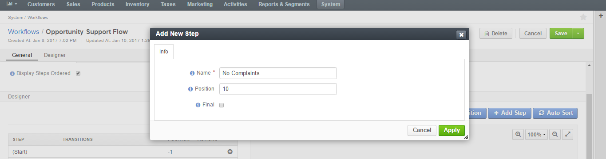 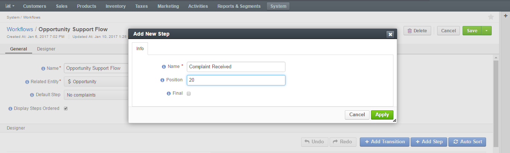Click Apply to save the step.
Next, we are going to apply a transition for these steps.
Add a Transition¶
To add a step to a workflow, click Add Transition in the top right corner of the chart.
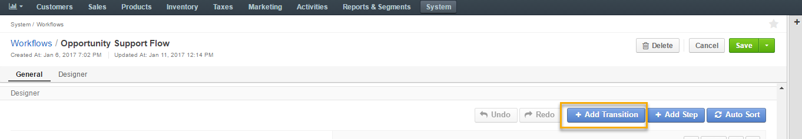| Field | Description |
|---|---|
| Name | The name of the transition that will be displayed on its button. |
| From Step | The workflow step, for which the transition button should appear on the entity page. |
| To Step | The step to which the workflow will progress after the transition is performed. |
| View Form | Transition attributes can appear in one of two available forms: in the popup window, which is a default transition behavior suitable for most cases, or on the separate page, which should be used with care and only for attribute-heavy transitions. |
| Warning Message | If you want to show a warning popup message to the user before a transition is executed, put the text of the warning into this field. |
| Button Icon | An icon that will appear on the transition button before the transition name. |
| Button Style | This control specifies the visual style of the transition button. |
| Button Preview | This is the live preview of the transition button as it will appear on the entity page. |
Important
Self-transitions do not change steps in workflows (e.g. it can be a transition that launches an Edit form of a record within the same step).
Define the following fields in the Attributes section of the Add New Transition form:
| Field | Description |
|---|---|
| Entity Field | This is the field of the workflow entity or its related entities that will appear on the view form of the transition. Use these if you want a user to add or edit some entity data in the transition. |
| Label | Use the field if you want to change the way it is displayed in the UI. The system label value of the entity is used by default. |
| Required | Check the Required box if definition of the attribute should be mandatory for the transition. |
| +Add | Click +Add to add a new attribute. |
Click Apply to save the attribute(s) in the system.
The following is an example of an attribute added for the Register a Complaint transition in the sample Opportunity Support Flow. The entity selected for the attribute is Additional Comments. Its label has been changed to Specify the Complaint.
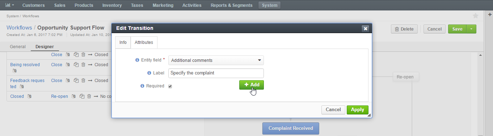 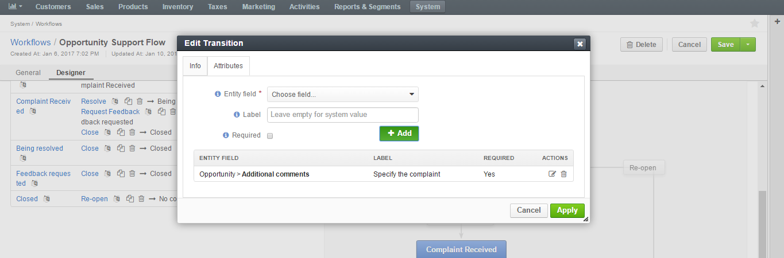In the same manner, specify steps, transitions and attributes required for your custom workflow.
The sample Opportunity Support Flow has been configured the following way:
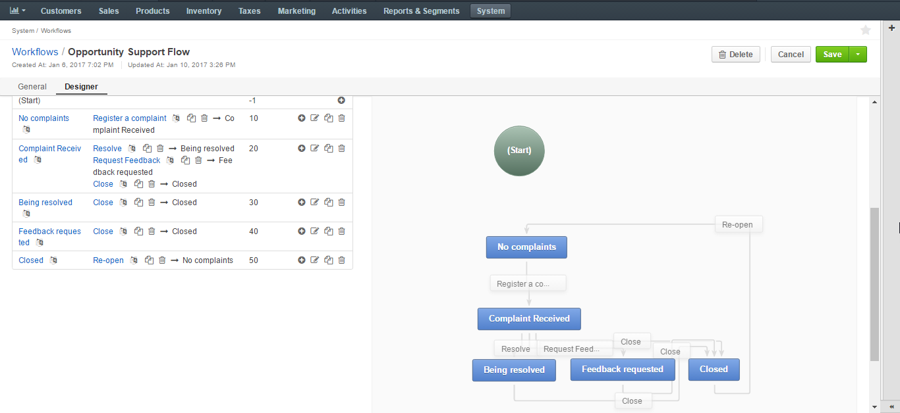UI Limitations for Workflow Creation¶
Oro workflows can be created from both the server-side and the UI. However, there is a number of functions that can be defined for a workflow only from the server-side logics in the course of integration. More information on workflow implementation can be found on this GitHub page and here
Workflow Visualization¶
Once the workflow has been configured and saved, you can see how it is visualized for the records:
- Transition buttons will be displayed in the top right corner of the entity record page.
- All the steps will be located at the top on the entity record page within the workflow widget.
The sample Opportunity Support Flow has been saved and activated.
As you can see from the screenshots below, the opportunity is currently in the No Complaints step. Clicking Register a Complaint will prompt an attribute we have configured for this transition:
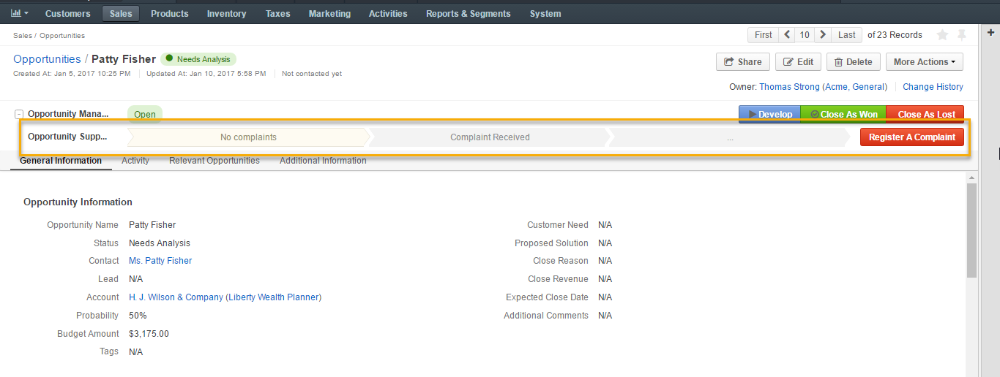 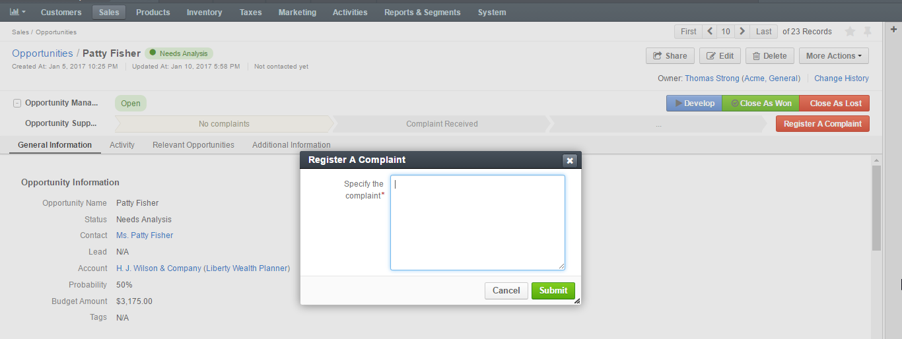Submitting a complaint will launch an opportunity page with Resolve, Request Feedback and Close transition buttons activated.
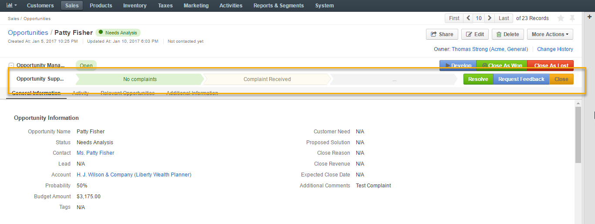Clicking each of these buttons will pass the user on to the next step specified in the workflow:
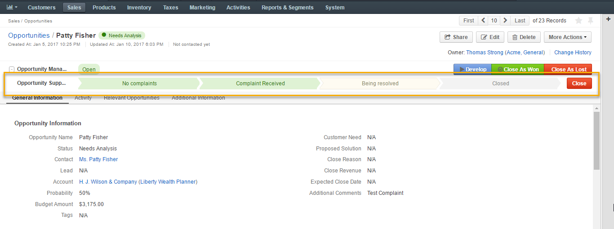Completed steps are green, the step in progress is white, the step to follow is grey. The completed workflow cycle will have all steps highlighted in green:
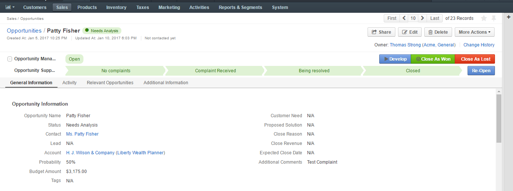As an illustration, we have unchecked the Display Steps Ordered box in the edit mode for the same workflow. Here is what the steps look like in this case:
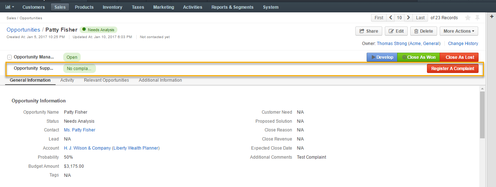The workflow widget now displays only the current step that the opportunity is in.
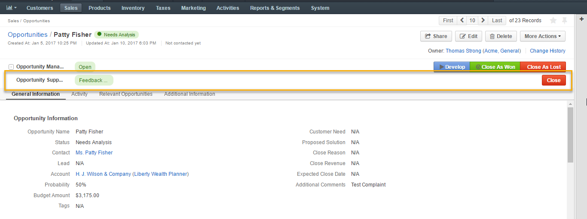 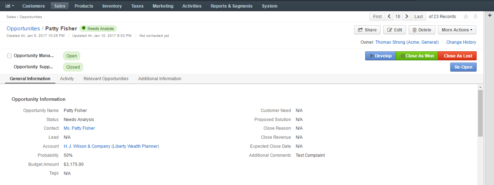The current step of a workflow is displayed in the Step column within the entity grid, as in the example below:
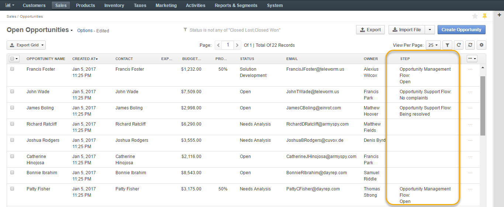Multiple Active Workflows¶
It is possible to have multiple active workflows for the same record. If you have more than one active workflow, you can separately activate each of them. In the following example, two workflows are available for one record:
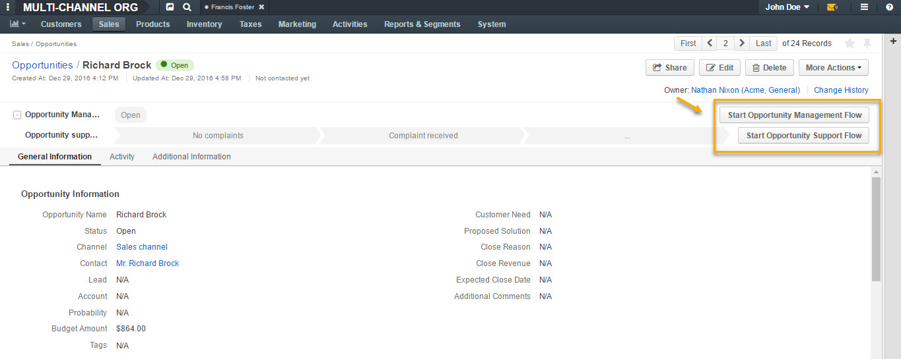Workflows are expandable and can be collapsed, if necessary, by clicking + on the left of the Workflow, as illustrated below:
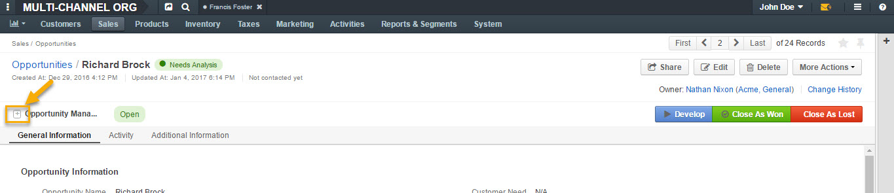 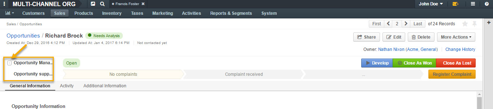Workflow Management¶
System Workflows¶
Since System workflows are pre-implemented in the system, their management from the UI is limited. From the grid, you can perform the following actions for system workflows:
- Clone: (copy the workflow to be able to customize it).
- View: (Go to the view page of the workflow).
- Activate/Deactivate: / (activate/deactivate the workflow).
Custom Workflows¶
Cloned system workflows and workflows created in the UI from scratch are custom workflows. You can perform the following actions for them:
- Clone: (copy the workflow to be able to customize it).
- View: (Go to the view page of the workflow).
- Activate/Deactivate: / (activate/deactivate the workflow).
- Edit: (open the edit form of the workflow).
- Delete: (delete the workflow from the system).
Workflow Activation¶
You can activate a workflow by clicking on the corresponding button on the view page of the workflow:
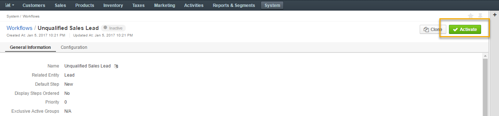Optionally, you can select certain workflows to be deactivated. If you do not, leave the field empty and click Activate.
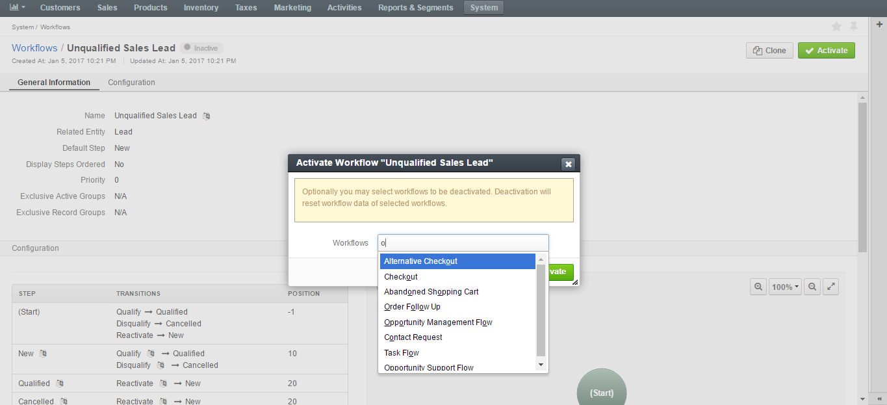Similarly, click Deactivate if you wish to deactivate the selected workflow:
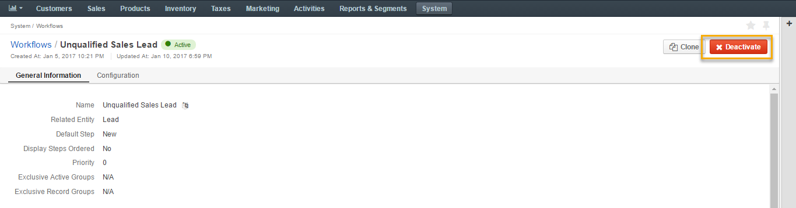 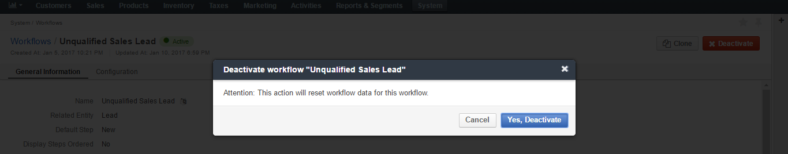Activating workflows does not happen automatically for all entities. Once the flow has been activated in System>Workflows, you need to start it manually for the required entities:
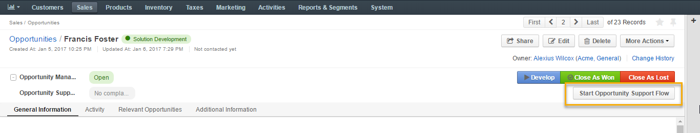It is possible to activate/deactivate workflows from the grid. See the previous section of this guide on Workflow Management to learn more about workflow grids.
User Permissions for Individual Workflows¶
Multiple workflows functionality requires an ability to manage user permissions to run individual workflows. You can configure the following workflow permissions in System>User Management>Roles:
- Visibility of the entire workflow and its steps/current step
- Ability to run workflow transactions
- Ability to run every individual transaction.
Workflow Translations¶
All workflow labels can be translated into other languages, providing better localizations for users from different countries. Click on the corresponding icon to get redirected to the translation grid.
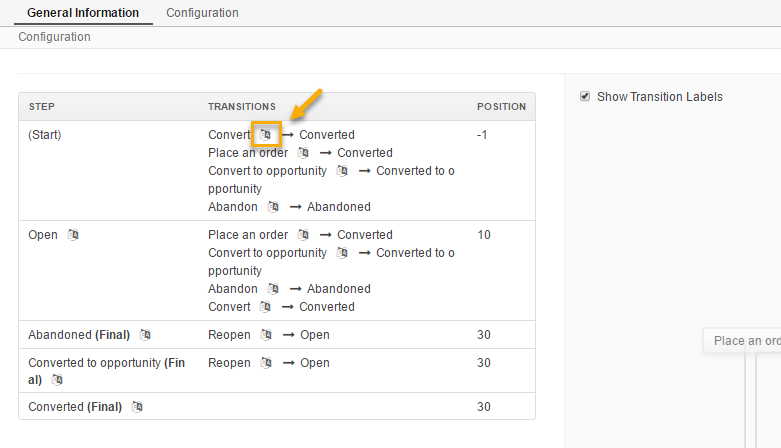Detailed Information About System Workflows¶
See the following sections to get more information about the system workflows in OroCommerce: